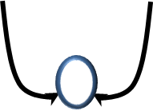
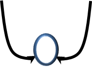

Дислексия – по каким признакам определить её наличие?
Несмотря на распространённость проблемы дислексии, которую всё чаще и чаще озвучивают исследователи разных стран, до сих пор нет точного алгоритма, как диагностировать и организовывать работу с этой категорией трудностей. Такая ситуация порождает тревогу у родителей, и массу неврологических проблем у детей. Если посмотреть на «волну» исследований в этой области, то можно заметить совершенно противоположные мнения: от полного игнорирования проблемы («нужно больше заниматься», «ребёнок просто лениться») до возведения дислекии в ранг «дара», который является критерием одарённости. Следствием такой ситуации будет: или формированием чувства вины у родителей/чувства неполноценности у детей, так как при огромных затратах, результат близок к нулю; или «перевод» проблемы в статус «инаковости/скрытой одаренности» и неоказание своевременной помощи ребенку, что приведёт к усложнению проблемы.
Еще одним фактором, который усугубляет проблему распространенности трудностей и ошибок при обучении чтению и письму является «скатывание» на формальное заучивание фактов в процессе обучения, полное игнорирование индивидуальных особенностей, невозможность учитывать разные способы принятия информации. Выходом их такой ситуации является:
- Выделение диагностических критериев или «маркеров», благодаря которым можно определить предрасположенность к таким трудностям у детей до начала обучения в школе или организовать «сопровождающее обучение» до появления проблемы в школе.
- Разработать методы и приемы, которые во время обучения в школе помогут компенсировать дефицитарные функции.
- Обеспечить здоровьесберегающими методикам весь процесс обучения ребенка, что сохранит самооценку ребенка, его мотивацию и любовь к чтению.
 Такая трехступенчатая взаимодополняемая работа позволит принять ребенка таким какой он есть и создать адекватные условия решения проблемы. Например, ребенок с дислексией не может решить математическую задачу, так как прочитал ее с ошибками – значит педагог предложит ему графическое изображение условий задачи. Ребенок, который очень медленно и проблематично пишет, может представлять свое знание литературного произведения в виде «графического романа». Таким образом, ребенок сможет обучаться, используя свои сильные стороны.
Такая трехступенчатая взаимодополняемая работа позволит принять ребенка таким какой он есть и создать адекватные условия решения проблемы. Например, ребенок с дислексией не может решить математическую задачу, так как прочитал ее с ошибками – значит педагог предложит ему графическое изображение условий задачи. Ребенок, который очень медленно и проблематично пишет, может представлять свое знание литературного произведения в виде «графического романа». Таким образом, ребенок сможет обучаться, используя свои сильные стороны.
Это очень важно понимать, так как на начальных этапах обучение чтению и письму являются основными критериями «успешного» обучения. А если эти процессы «не идут». Ребенок никак не может добраться до конечной цели? Часть детей, обучающихся в школе, движутся вперед к цели по «скоростному пути», не встречая никаких препятствий. Но для детей с трудностями при обучнии чтению и письму ситуация обучения всегда похожа на «аварийную». Они еще могут добраться до конечного пункта назначения, однако вместе со своим педагогом/родителем всегда вынуждены искать более длинный альтернативный маршрут и, конечно, прикладывать при этом усилий в несколько раз больше, чем их сверстники.
Какие же критерии или «маркеры» мы можем обозначить для каждой возрастной категории, чтобы педагог или родитель впервые задумался о том, что ребенку необходима специальная помощь, что он «не ленится», а испытывает колоссальные трудности, пытаясь познать то, что порой даже увидеть, проанализировать и запомнить не может.
Критерии для детей дошкольного возраста
Родители часто жалуются на забывчивость ребенка, необходимость многократного повторения просьбы, чтобы ребенок выполнил ее в полном объеме
Трудности с речью:
- сложно произнести длинное слово
- проблемы в согласовании слов в предложении
- использование односложных словосочетаний вместо развернутых высказываний
- бедный или искаженный пересказ
- трудности в запоминании рифмованных текстов, бедность словарного запаса
- замена слов «ссорными фразами, междометиями», пантомимикой
- использование слов, сходных по звучанию
Зеркальное рисование цифр и букв, путание правой и левой стороны, непонимание некоторых предлогов, дети редко используют предлоги в своей речи
Отсроченная реакция (взрослый обратился к ребенку с просьбой, а ребенок или игнорирует, или отвечает через какой-то промежуток времени). При обращении к ребенку возникает ощущение, что он не слышит обращенной к нему речи, либо частично слышит. Не может выполнять 2 и более дел одновременно, например, если ребенок рисовал, а Вы к нему обратились с какой-либо просьбой, то ребенок (если для него важна была Ваша просьба) перестанет рисовать, и будет Вас слушать.
Трудности в запоминании и воспроизведении цикличных заданий или последовательных историй. В речи часто перескакивает с одной фразы на другую, рассказ очень сбивчивый и непоследовательный.
У ребенка может наблюдаться некоторая моторная неловкость:
- сложности в срисовывании (трудно без опорных точек нарисовать треугольник/многоугольник)
- трудности в четкой координации движений (ребенок может быть несколько неловким, все время на что-то натыкается, роняет)
- не может завязывать шнурки, проходить лабиринты, аккуратно налить из бутылки воды в стакан
- Нежелание ходить в школу или жалобы на школу/домашнее задание/трудности на уроках письма и чтения.
- Нежелание читать, трудности в запоминании букв/цифр.
- Постоянная потеря школьных принадлежностей, забывчивость, трудности при вспоминании «что было в школе».
- Плохая организация своего рабочего пространства, некоторая рассеяность и моторная неловкость.
- Медленное освоение чтения и письма.
- При письме наблюдается быстрая истощаемость.
- При чтении может перепрыгивать на другие строчки.
- Может «уходить в мир фантазий».
- Медленное, побуквенное чтение, или «додумывание» окончания слова.
- Трудности с пересказом текста, выделение главной мысли, подбором синонимов/антонимов.
- В речи много запинок и междометий, речь нечеткая.
- Орфографические трудности, неумение использовать выученные правилы при письме.
- Попытка выучить текст для пересказа вместо осмысленного чтения.
- Читать не любит.
- При выполнении заданий постоянно переспрашивает инструкцию.
- Трудности в ответах на вопросы, требующие знание дат, определений, формул.
- Трудности при чтении: медленный темп, сниженный тембр, подстановка слов/слогов/букв, нечеткое произнесение слов, может путать буквы, сокращать слова
- Уже проявляется фрустрация на чтение и письмо, попытка «обойти» сложности через аудиальный канал (просит, чтобы ребенку прочитали параграф) и механическое запоминание.
- При выполнении заданий появляется стратегия «свернутой деятельности» (быстренько сделал, качество не важно).
- чень много тратит времени на выполнение домашних заданий.
- еправильно читает слова, испытывает трудности с прочтением и воспроизведением понятий, определений, сложных и заимствованных слов.
- а выполнение письменных работ тратит больше времени, чем сверстники. Трудности при одновременной работе в тетради и на доске.
- Допускает большое количество ошибок, описок при выполнении письменных работ.
- итает, но часто пролистывает эпизоды-описания, останавливается на диалогах. Не может читать за один раз большой объем текста, наступает пресыщение.
- спытывает трудности со здачей работы в определенные сроки. Переживает из-за собственной некомпетентности. Становится зависимым от оценки окружающих. Формируются стратегия поведения, когда восприятие себя возможно только через сделанную работу.
Если Вы заметили перечисленные трудности у ребенка, и при этом можете вспомнить, что сами/кто-то из родителей испытывали похожие характеристики в своей школьной жизни, то необходимо определить первопричину, степень трудностей и наметить образовательный маршрут для Вашего ребенка.
Представленная в этой книги модель выявления трудностей при обучении чтению и письму поможет определить: что же лежит в основании «пирамиды трудностей» (это могут быть отдельные причины и сочетание нескольких):
- недоразвитие фонематического восприятия
- смешение близких по артикуляции звуков
- трудности овладения зрительным образом буквы, смешение букв по кинестетическому сходству
- трудности планирования и контроля
- трудности поддержания рабочего состояния
- пространственные ошибки
И в зависимости от этого, необходимо создать ресурсное или сопровождающее обучение, которые поможет перекрыть трудности на базовых уровнях и надстроить вспомогательные. Каждый ребенок в своем развитии повторяет этапность развития цивилизации при овладении такими процессами как чтение и письмо, (точнее их становление) и проходит следующие этапы:
- Сначала танец (координированность движений, ритмичность, способность повторить рисунок танца)
- Потом наскальная живопись (рисунок, изображающий конкретные события, указывающие направление действий, очередность происходящих событий), а потом уже непосредственно
- Кодирование и декодирование (пиктограмм, клинописи...).
Практически в таком же порядке будет выстраиваться коррекционная работа с детьми, испытывающими трудности при обучении чтению и письму.
Дислексия – проблема детей нового поколения?
Современные исследования в области педагогики и психологии просто кричат о том, что с каждым новым поколением увеличивается количество детей с трудностями в обучении. Данные последних исследований в нашей стране подтвержают эту негативную тенденцию. При этом возникает парадокс: дети превосходят своих родителей в знаниях современных информационных и компьютерных технологий, они легко и быстро обучаются всему новому, и при этом значительно уступают в освоении и использовании чтения и письма. Все чаще и чаще встречаются такие понятия, как «дети нового поколения». И на этом фоне поступают предложения о необходимости убрать/упростить обучение тому, что детям в будущем будет ненужным.
Нужно сказать, что чтение и письмо в процессе обучения не являются самоцелью, это в будущем «вспомогательные процессы». Но то, чему ребенок обучается в процессе обучения чтению и письму, а это кодирование и декодирование информации, вычленению важного и второстепенного, умению перестраивать поступающую информацию в зависимости от имеющихся ресурсов. То есть всему тому, что в любом будущем будет обеспечивать выживаемость человеку. Поэтому вопрос об актуальности обучения чтению и письму снимается. Чтобы понять и принять увеличение детей с трудностями в обучении, нужно учесть два момента. Во-первых, развитие современной медицины позволяет сохранять детей с разной соматической зрелостью. У нас появляются дети на 26-27 неделях беременности, когда мозг малыша по многим критериям еще «спит». Или же в связи со снижением репродуктивной функцией, многим юеременным женщинам «рекомендованы» препараты, которые также замедляют процессы созревания мозга у ребенка. Добавим к этому жизнь будущих родителей в состоянии хронической усталости, урбанистическое питание, и в итоге мы имеем соматически ослабленных детей с пониженным тонусом (быстро устают, быстро пресыщаются деятельностью).
Во-вторых, на детей просто надвигается постоянно увеличивающийся информационный поток. А с увеличением формальной, практико-невостребованной нагрузки мозг ребенка, не имея остаточных ресурсов, просто не справляется с поставленной задачей. Сами программы внутри и вне школы приводят к превышению «оптимума образовательных воздействий», и как следствии, это приводит к возникновению психических и физических заболеваний, что, в свою очередь провоцирует проблему школьной неуспеваемости и актуализирует проблему эффективности обучения.
Весь этот процесс наложения причин, которые затрудняют процесс обучения чтению и письму, усугубляют изменения в семейном и дошкольном воспитании и обучении. Такие изменения нарушают естественный ход развития психики. Например, перегруженность игрушками-роботами в дошкольном детстве приводит к тому, что такой процесс, как домысливание, фантазирование не формируются вообще. Раннее обучение буквам, цифрам - то есть обучение символам, перегружают нервную систему, обкрадывая способность мыслить картинками. В результате мы имеем достаточно большое количество детей, с которыми занимаются, у которых много игрушек, но... вместо самостоятельной игры они предпочитают смотреть «видео блоги о том, как играют другие», вместо радостног настроения постоянно нытьё, а при определении сформированных навыков при поступлении в школу – явное не соответстветствие нормам развития.
И здесь возникает вопрос: «Какие законы нужно учитывать, как и какими методами их внедрять в практику, чтобы данный путь воспитания и обучения был доступен для большинства родителей (конечно, с различными вариациями развития), но без порождения отклоняющихся состояний у детей?». «Отклоняющиеся состояния» - это истерики, нытьё, агрессия, зависание на сериальных мультфильмах и ПК-играх, очень переборчивое питание, протесты по поводу и без него, вредные привычки (сосание пальца, одежды...), проблемное переключение ребенка с одного вида деятельности на другой.
Для иллюстрации самого процесса «следования законам психического развития», мы будем использовать модель «эпигенетического ландшафта» (К.Х.Уоддингтон). Что такое «следование законам психического развития»? Это соответствие между тем, что мы даем рбенку с тем, что он способен адекватно принять и переварить. Если провести параллель, то нельзя дать годовалому ребенку есть рыбу целиком. Он, конечно, ее может съесть и даже насытиться, но риски для здоровья огромные. То же самое и обучением и с воспитанием, прежде чем что-то сделать, нужно спрогнозировать риски, при этом учитывать и отдаленные риски. Папа одной моей клиентки научил читать девочку в два года. Для многих – это просто супер результат. Метод, который выбрал папа, привел ко множеству психосоматических проблем. Он держал, а потом медленно разворачивал конфету на глазах у ребенка. За это время она должна была прочитать слово. И если не получилось у нее это сделать, конфету съедал папа. Вот от такого воздействия произошло изменение естественного хода развития организма. Для ребенка, который прочувствовал на себе несправедливость требований, ощутил свои ограниченные возможности, мир уже не будет радостным и полным безусловной любви. Для этой девочки точкой изменения будет возраст 2 года. Для другого моего клиента, чудесного мальчика с синдромом дефицита внимания, мир перестал был справедливым и предсказуемым, когда его родители поместили рейтенговую систему обучения, сказав, что «дальше ты сам».
Само уклонение или перестройка в развитии организма зависит от срока воздействия ( в какой период наступило, как долго продолжалось, как часто повторяется), от интенсивности, и есть ли какие-либо сглаживающие моменты. Напрмер, у ребенка могут быть сложности с чтением и письмом, и школа для него может стать «адом», но родители могут компенсировать своей безусловной любовью, или усугубить ситуацию, постоянно принимая ребенка через призму успешности в школе. При одних и тех же трудностях, при обних и тех же условиях искажения, от компенсации будет зависеть много. Зная законы, своевременно обращаясь за консультативной и/или коррекционной помощью к психологам можно создать такие условия «долины ландшафта» развития психики, при которых слабые стороны сгладятся или компенсируются, а сильные разовьются и станут опорой дальнейшего успешного обучения (соотношение потраченных сил и полученного результата).
Итак, какие воздейстия разрушают, меняют естественный ход развития психики (базовые этапы/потребности психики расписаны во всех пособиях по возрастной психологии).
1. Несвоевременное воздействие (то, что в современном мире встречается достаточно часто: практически с рождения дети находятся в окружении шумной взрослой среды (поход в магазины, вечеринки, раннее обучение (с 6 месяцев), раннее обучение по классно-урочной системе), что перегружает психику ребенка, блокируя, из-за невозможности адекватного ответа, способность ориентировочной реакции. Ориентировочная реакция – это реакция на какое-то воздействие (например, ребёнка пытаются привлечь к книге в новой или шумной обстановке, в результате ребёнок не может выделить, что важнее в данный момент, психика не может обработать несколько раздражающих факторов; или пытаются уговорить выйти из магазина игрушек). В результате, ребенок не всегда слышит и понимает обращенную к нему речь, не всегда удерживает в активной памяти инструкцию в полном объеме. Стрессогенность обстановки, в которой живут дети приводит к тому, что появляются дети, которые «живут на своей волне», игнорируют просьбы других, не могут глубоко проникать в суть вещей.  В итоге у ребенка формируются функциональные сложности при обучении, когда организм не в состоянии преодолеть помеху, и психика начинает развиваться по «боковой долине». Чем это опасно для организма? Новый путь перетягивает на себя все установленные отношения в различных отделах мозга, а значит где-то появится «дыра». «Дыра» в тех функциях, которые должны сейчас формироваться. Например, всем известные задачи на скорость, время и расстояние вызывают много вопросов у детей. Очень часто дети не могут себе представить, как кто-то откуда-то вышел, кого-то обогнал... А сложности могли возникнуть из-за того, что в период от 3-4 лет, ребенок не занимался моделированием пространства (это строительство домов, замков, прокладывание между ними дорог, конструирование моста и туннеля), а учил буквы, играл на скрипке, играл в вирутальные игры. То есть, произошло перетягивание с актуальных функций на несвоевременные (и часто это со стороны не видно так как, развитие идет до определенного момента «параллельно» естественному, но с небольшим отклонением), которое на определенном возрастном этапе будет представлять «нарушенное или искаженное развитие»
В итоге у ребенка формируются функциональные сложности при обучении, когда организм не в состоянии преодолеть помеху, и психика начинает развиваться по «боковой долине». Чем это опасно для организма? Новый путь перетягивает на себя все установленные отношения в различных отделах мозга, а значит где-то появится «дыра». «Дыра» в тех функциях, которые должны сейчас формироваться. Например, всем известные задачи на скорость, время и расстояние вызывают много вопросов у детей. Очень часто дети не могут себе представить, как кто-то откуда-то вышел, кого-то обогнал... А сложности могли возникнуть из-за того, что в период от 3-4 лет, ребенок не занимался моделированием пространства (это строительство домов, замков, прокладывание между ними дорог, конструирование моста и туннеля), а учил буквы, играл на скрипке, играл в вирутальные игры. То есть, произошло перетягивание с актуальных функций на несвоевременные (и часто это со стороны не видно так как, развитие идет до определенного момента «параллельно» естественному, но с небольшим отклонением), которое на определенном возрастном этапе будет представлять «нарушенное или искаженное развитие»
2. Интенсивное воздействие (это всевозможные формы «раннего развития» с претензией «мы откроем талант вашего ребенка»: обучение чтению, выполнение заданий в прописях, введение английского/китайского языка, активно стимулирующих развитие) дает сначала резкий рывок в развитии, а по прошествии времени, ребенок демонстрирует регрессивные формы поведения. В чем проявляется регрессивные формы: ребенок может знать названия всех планет Солнечной системы в дошкольном детстве, но не иметь развернутой сложной игры. Очень резко реагировать на незначительные замечания, быть эмоционально неуравновешенным. Или «вдруг» начать вести себя как ребенок более младшего возраста, играть в игрушки, которые не соотвествуют возрасту. Невозможность прочувствовать академические успехи, которые для ребенка достаточно энергозатратные, приводят к истощению нервной системы, развитие происходит за счет обкрадывания чувственного опыта, способности переживать и радоваться.
 
